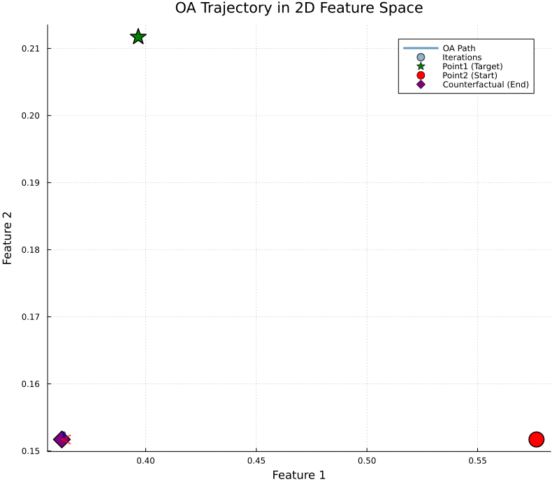
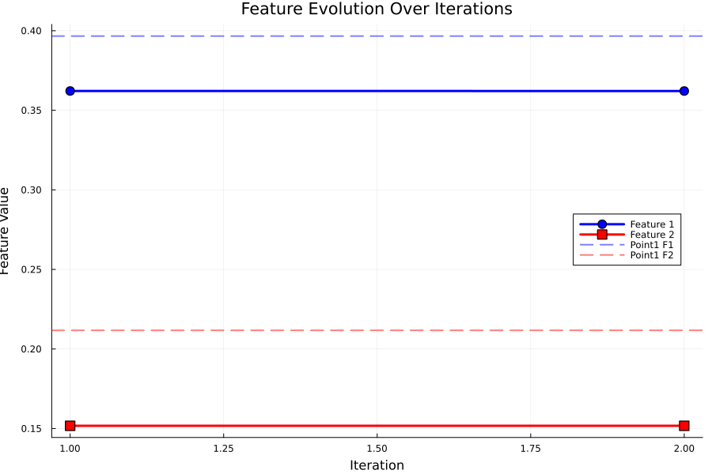
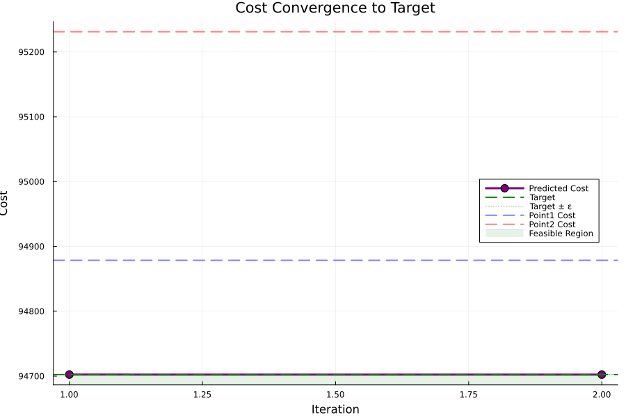
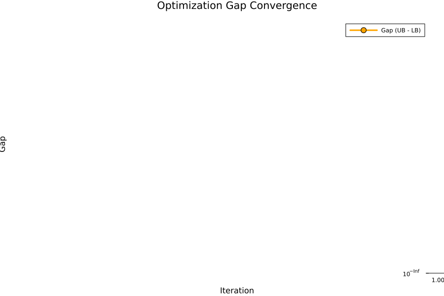

| Point | Feature 1 | Feature 2 | Cost | Description |
|---|---|---|---|---|
| Point1 | 0.3966 | 0.2117 | 94878.59 | Original point (target) |
| Point2 | 0.5766 | 0.1517 | 95231.23 | Perturbed point (start) |
| Counterfactual | 0.3621 | 0.1517 | 94702.2734 | Found solution (end) |
| Metric | Value |
|---|---|
| Feature 1 Recovery Error | 0.0345 |
| Feature 2 Recovery Error | 0.06 |
| L2 Distance to Point1 | 0.0692 |
| Original Perturbation L2 | 0.1897 |
| Recovery Ratio | 36.48% |
| Parameter | Value |
|---|---|
| Target Cost | 94702.2812 |
| Epsilon | 0.01 |
| Achieved Cost | 94702.2734 |
| Cost Error | 0.0078 |
| Target Achieved? | ✓ YES |